Mathematical Structures¶
The individual chapters in this part of the tutorial are relatively independent of one another. You should be familiar with the chapter Sage Objects before reading material here. The section List Comprehensions (Loops in Lists) is also useful. Eventually, when you are ready for some real experimentation, you will want to read much of the chapter Programming Tools. Many sections in this part are incomplete, and we welcome contributions and additions!
Integers and Modular Arithmetic¶
Integers Modulo  ¶
¶
You should be familiar with Universes and Coercion and Variables
In this section we cover how to construct 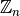, the ring of integers modulo
, and do some basic computations.
To construct you use the Integers command.
sage: Integers(7)
Ring of integers modulo 7
sage: Integers(100)
Ring of integers modulo 100
We could do computations modulo an integer by repeatedly using the % operator in all of our expressions, but by constructing the ring explicitly we have access to a more natural method for doing arithmetic.
sage: R=Integers(13)
sage: a=R(6)
sage: b=R(5)
sage: a + b
11
sage: a*b
4
And by explicitly coercing our numbers into the ring we can compute some of the mathematical properties of the elements. Like their order, both multiplicative and additive, and whether or not the element is a unit.
sage: a.additive_order()
13
sage: a.multiplicative_order()
12
sage: a.is_unit()
True
The additive inverse of  is computed using -a and, if is a unit, the multiplicative inverse is computed using a^(-1) or 1/a.
is computed using -a and, if is a unit, the multiplicative inverse is computed using a^(-1) or 1/a.
sage: (-a)
7
sage: (a^(-1))
11
These inverses can be checked easily.
sage: a + (-a)
0
sage: a*(a^(-1))
1
Recall that division in is really multiplication by an inverse.
sage: R=Integers(24)
sage: R(4)/R(5)
20
sage: R(4)*R(5)^-1
20
sage: R(4/5)
20
Not all elements have an inverse, of course. If we try an invalid division, Sage will complain
sage: R(5/4)
...
ZeroDivisionError: Inverse does not exist.
We have to be a little bit careful when we are doing this since we are asking Sage to coerce a rational number into the 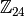 This may cause some unexpected consequences since some reduction is done on rational numbers before the coercion. For an example, consider the following:
sage: R(20).is_unit()
False
sage: R(16/20)
20
In ,  is not a unit, yet at first glance it would seem we divided by it. However, note the order of operations. First sage reduces 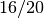 to 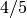, and then coerces into . Since
is not a unit, yet at first glance it would seem we divided by it. However, note the order of operations. First sage reduces 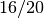 to 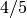, and then coerces into . Since  is a unit in , everything works out ok.
is a unit in , everything works out ok.
We can also compute some properties of the ring itself.
sage: R
Ring of integers modulo 24
sage: R.order()
24
sage: R.is_ring()
True
sage: R.is_integral_domain()
False
sage: R.is_field()
False
Since this ring is finite then we can have Sage list all of it’s elements.
sage: R = Integers(13)
sage: R.list()
[0, 1, 2, 3, 4, 5, 6, 7, 8, 9, 10, 11, 12]
R in this example is a field, since 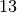 is a prime number. If our ring is not a field then the units in form a group under multiplication. Sage can compute a list of generators of the group of units using it’s unit_gens() method.
sage: R = Integers(12)
sage: R.uni
R.unit_gens R.unit_group_order
R.unit_group_exponent R.unit_ideal
sage: R.unit_gens()
[7, 5]
We can also compute the order of this subgroup.
sage: R.unit_group_order()
4
Unfortunately, Sage doesn’t seem to have a function which directly returns the units in as a group. We can list the elements in a couple of different ways using the information above.
sage: (a,b) = R.unit_gens()
sage: a
7
sage: b
5
sage: [ (a^i)*(b^j) for i in range(2) for j in range(2) ]
[1, 5, 7, 11]
We can also compute the list of units by using a list comprehension.
sage: [ x for x in R if x.is_unit()]
[1, 5, 7, 11]
Exercises:
- Construct the ring of integers modulo 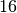 and answer the following:
- Compute the multiplicative orders of 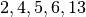 and 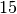?
- Which of the elements listed above is a unit?
- What are the generators for the group of units?
- Compute a list of all of the elements in the group of units.
- Do all of the steps above again, but with the ring of integers modulo 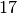.
- Use an exhaustive search method to write a function which determines if a is a unit modulo n.
- For 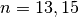 and
determine which of 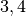 and
- Use Sage to determine whether the following Rings are fields. For each example, describe the unit group using generators and relations.
- 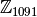
- 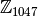
- 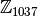
- 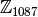
Solving Congruences¶
You should be familiar with Integers Modulo and List Comprehensions (Loops in Lists)
A linear congruence is an equation of the form 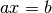 in . One way to see if there is a solution to such a problem is an exhaustive search. For example, to determine if there exists a solution to 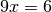 we can do the following:
sage: R=Integers(21)
sage: a=R(9)
sage: 6 in [ a*x for x in R ]
True
Notice that the above tells us only that there exists at least one solution to the equation in  . We can construct the list of these solutions by using the following list comprehension.
. We can construct the list of these solutions by using the following list comprehension.
sage: [ x for x in R if R(9)*x == R(6)]
[3, 10, 17]
We can determine when a solution does not exist in a similar fashion.
sage: [ x for x in R if R(9)*x == R(2) ]
[]
We can also use the solve_mod() function to compute the same results.
sage: solve_mod( 9*x == 6, 21)
[(3,), (10,), (17,)]
sage: solve_mod( 9*x == 2, 21)
[]
solve_mod() can handle linear congruences of more than one variable.
sage: solve_mod( 9*x + 7*y == 2, 21)
[(15, 14), (15, 8), (15, 2), (15, 17), (15, 11), (15, 5), (15, 20), (1, 14), (1, 8), (1, 2), (1, 17), (1, 11), (1, 5), (1, 20), (8, 14), (8, 8), (8, 2), (8, 17), (8, 11), (8, 5), (8, 20)]
The solutions are in the form  , where the
variables are listed in the order in which they appear in the equations.
, where the
variables are listed in the order in which they appear in the equations.
solve_mod() can solve systems of linear congruences.
sage: solve_mod( [9*x + 2*y == 2, 3*x + 2*y == 11 ], 21)
[(9, 13), (16, 13), (2, 13)]
As with the solve() command, computations can be slow when working with systems that have a lot of variables and/or equations. For these systems the linear algebra capabilities are recommended.
We can also compute the solutions for non-linear congruences using solve_mod().
sage: solve_mod(x^2 + y^2 == 1, 7)
[(0, 1), (0, 6), (1, 0), (2, 2), (2, 5), (5, 2), (5, 5), (6, 0)]
sage: solve_mod([x^2 + y^2 == 1, x^2 - y == 2], 7)
[(2, 2), (5, 2)]
Finally, Sage can compute the simulatenous solution of linear
congruences with different modulii under certain circumstances. This
is done using the Chineses Remainder Theorem, and is implemented in
the crt() command. For example, the following computes the
smallest nonnegative integer,  that is congruent to 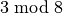, 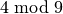,
and 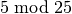.
that is congruent to 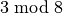, 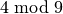,
and 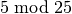.
sage: crt([3,4,5],[8,9,25])
355
We can check the validity of this solution using the mod() command.
sage: mod(355,8)
3
sage: mod(355,9)
4
sage: mod(355,25)
5
The set of all integer solutions is those integers congruent to 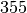 modulo 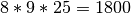.
Exercises:
- Find all solutions to the following congruences over 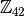.
- 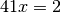
- 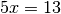
- 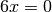
- 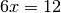
- 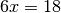
- 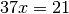
- Above you computed the solution sets for the congruences , and . What are the similarities? What are the differences? Can you use these results to say something in general about the structure of the set 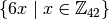 ?
- Use the solve_mod() command find all of the solutions to the following congruences modulo 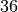.
- 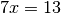
- 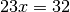
- 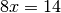

Mini-Topic: Euclidean Algorithm¶
You should be familiar with Integer Division and Factoring, Variables, External Files and Sessions, and While loops
Recall that for 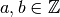 with 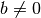, there always exists unique 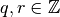 such that 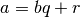 with  . With that in mind, we will use Sage to calculate the gcd of two integers using the Euclidean Algorithm. The following code is an implementation of the Euclidean Algorithm in Sage.
. With that in mind, we will use Sage to calculate the gcd of two integers using the Euclidean Algorithm. The following code is an implementation of the Euclidean Algorithm in Sage.
# Begin euclid.sage
r=a%b
print (a,b,r)
while r != 0:
a=b; b=r
r=a%b
print (a,b,r)
# End euclid.sage
If you create a file euclid.sage containing the text above, then the output after loading the file is:
sage: a=15; b=4
sage: load euclid.sage
(15, 4, 3) (4, 3, 1) (3, 1, 0)
sage: a=15; b=5
sage: load euclid.sage
(15, 5, 0)
In the first case, we see that the gcd was  , while in the second the gcd was .
, while in the second the gcd was .
Exercises:
- Revise the loop in the euclid.sage so that only the gcd and the total number of divisions (i.e. the number of steps through the algorithm) are printed. Compare the speed of this version of the algorithm with the built-in Sage function gcd() by using both functions on large integers.
- Write your own Extended Euclidean Algorithm by revising the loop in euclid.sage.
Groups¶
There are three major types of groups implemented in sage, PermutationGroup(), MatrixGroup() and AbelianGroup(). We will work with permutation groups first and cover most of the methods that are applied to them. Many of these methods are applicable to arbitrary groups, so the other sections will be somewhat briefer and will focus on methods particular to those structures.
See also
Group Theory and Sage: A Primer by Rob Beezer
Symmetric Groups¶
The Symmetric Group 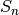 is the group of all permutations on elements. First we will construct the symmetric group on 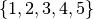 which is done by using the SymmetricGroup command.
sage: S5 = SymmetricGroup(5)
S5 Symmetric group of order 5! as a permutation group
Once the group has been constructed we can check the number of elements, which is 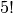, and list them all.
sage: S5.cardinality()
120
sage: S5.list()
[(), (4,5), (3,4), (3,4,5), (3,5,4), (3,5), (2,3), (2,3)(4,5), (2,3,4), (2,3,4,5), (2,3,5,4), (2,3,5), (2,4,3), (2,4,5,3), (2,4), (2,4,5), (2,4)(3,5), (2,4,3,5), (2,5,4,3), (2,5,3), (2,5,4), (2,5), (2,5,3,4), (2,5)(3,4), (1,2), (1,2)(4,5), (1,2)(3,4), (1,2)(3,4,5), (1,2)(3,5,4), (1,2)(3,5), (1,2,3), (1,2,3)(4,5), (1,2,3,4), (1,2,3,4,5), (1,2,3,5,4), (1,2,3,5), (1,2,4,3), (1,2,4,5,3), (1,2,4), (1,2,4,5), (1,2,4)(3,5), (1,2,4,3,5), (1,2,5,4,3), (1,2,5,3), (1,2,5,4), (1,2,5), (1,2,5,3,4), (1,2,5)(3,4), (1,3,2), (1,3,2)(4,5), (1,3,4,2), (1,3,4,5,2), (1,3,5,4,2), (1,3,5,2), (1,3), (1,3)(4,5), (1,3,4), (1,3,4,5), (1,3,5,4), (1,3,5), (1,3)(2,4), (1,3)(2,4,5), (1,3,2,4), (1,3,2,4,5), (1,3,5,2,4), (1,3,5)(2,4), (1,3)(2,5,4), (1,3)(2,5), (1,3,2,5,4), (1,3,2,5), (1,3,4)(2,5), (1,3,4,2,5), (1,4,3,2), (1,4,5,3,2), (1,4,2), (1,4,5,2), (1,4,2)(3,5), (1,4,3,5,2), (1,4,3), (1,4,5,3), (1,4), (1,4,5), (1,4)(3,5), (1,4,3,5), (1,4,2,3), (1,4,5,2,3), (1,4)(2,3), (1,4,5)(2,3), (1,4)(2,3,5), (1,4,2,3,5), (1,4,2,5,3), (1,4,3)(2,5), (1,4)(2,5,3), (1,4,3,2,5), (1,4)(2,5), (1,4,2,5), (1,5,4,3,2), (1,5,3,2), (1,5,4,2), (1,5,2), (1,5,3,4,2), (1,5,2)(3,4), (1,5,4,3), (1,5,3), (1,5,4), (1,5), (1,5,3,4), (1,5)(3,4), (1,5,4,2,3), (1,5,2,3), (1,5,4)(2,3), (1,5)(2,3), (1,5,2,3,4), (1,5)(2,3,4), (1,5,3)(2,4), (1,5,2,4,3), (1,5,3,2,4), (1,5)(2,4,3), (1,5,2,4), (1,5)(2,4)]
As you can see from the list, in Sage a permutation is written in cycle notation. Note that the empty parenthesis () is used to represent the identity permutation. We create the identity permutation and a randomly chosen element as follows.
sage: id = S5.identity()
()
sage: S5.random_element()
(1,2)(3,4)
sage: r= S5.random_element(), r
(1,3,4)(2,5)
As you can see, subsequent calls for a random element give a new element each time. We can also express the element  as a
function by listing the images of 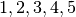 in order.
as a
function by listing the images of 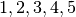 in order.
sage: r.list()
[3,5,4,1,2]
We can construct a specific element in 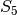 by coercing a permutation, written in cycle notation, into 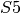. We must enclose the product of cycles in quotations for Sage to parse the input correctly.
sage: r = S5('(1,3)(2,4)'); r
(1,3)(2,4)
sage: s = S5('(1,4,3,2)'); s
(1,4,3,2)
We may also construct an element  using the list of images that it has as a function.
using the list of images that it has as a function.
sage: t = S5([1,5,4,3,2]); t
(2,5)(3,4)
The product of cycles is taken from left-to-right and is, of course, not commutative.
sage: s*t
(1,4,2,3)
sage: t*s
(1,2,4,3)
sage: id*s
Let’s compute the order of an element by using the object’s order() method and check this directly.
sage: r.order()
2
sage: r*r
()
sage: s.order()
4
sage: s*s
(1,3)(2,4)
sage: s*s*s*s
()
The exponent of a group is the least common multiple of the orders of the elements.
sage: S5.exponent()
60
The sign() method is used to compute the sign of a permutation, indicating whether it can be written as the product of an even or an odd number of permutations.
sage: S5('(2,3,4)').sign()
1
sage: S5('(4,5)').sign()
-1
Each symmetric group is a subgroup of 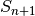.
sage: S4 = SymmetricGroup(4)
sage: S4.is_subgroup(S5)
True
You can construct the subgroup generated by a list of elements by using the subgroup() method.
sage: H = S5.subgroup([r,s])
sage: H
Subgroup of SymmetricGroup(5) generated by [(1,3)(2,4), (1,4,3,2)]
sage: H.list()
[(), (1,2,3,4), (1,3)(2,4), (1,4,3,2)]
We can test to see if the subgroup that we have just created has certain properties by using the appropriate methods. typing H.is() <tab> will give a list of several properties to test.
sage: H.is_abelian()
True
sage: H.is_cyclic()
True
The elements originally used to generate a subgroup are obtained with the gens() method. Sage can’t guarantee a minimal generating set, but gens_small() makes an attempt.
sage: H.gens()
[(1,3)(2,4), (1,4,3,2)]
sage: H.gens_small()
[(1,4,3,2)]
A useful tool for examining the structure of a group is the multiplication table, often called the Cayley Table. Invoke the group’s cayley_table() method (also called multiplication_table()). The default uses letters to represent the group elements (in the order they appear using list()).
sage: S3 = SymmetricGroup(3)
sage: S3.cayley_table()
* a b c d e f
+-----------
a| a b c d e f
b| b a d c f e
c| c e a f b d
d| d f b e a c
e| e c f a d b
f| f d e b c a
sage: S3.list()
[(), (2,3), (1,2), (1,2,3), (1,3,2), (1,3)]
We can also use the elements themselves, or give them names. Here we assign name based on the symmetries of a triangle: u_i() for reflections through the axis containing vertex i() and r^1, r^2() for the rotations.
sage: S3.cayley_table(names='elements')
* | () (2,3) (1,2) (1,2,3) (1,3,2) (1,3)
-------------------------------------------------
() | () (2,3) (1,2) (1,2,3) (1,3,2) (1,3)
(2,3) | (2,3) () (1,2,3) (1,2) (1,3) (1,3,2)
(1,2) | (1,2) (1,3,2) () (1,3) (2,3) (1,2,3)
(1,2,3) | (1,2,3) (1,3) (2,3) (1,3,2) () (1,2)
(1,3,2) | (1,3,2) (1,2) (1,3) () (1,2,3) (2,3)
(1,3) | (1,3) (1,2,3) (1,3,2) (2,3) (1,2) ()
sage: S3.cayley_table(names=['id','u1','u3','r1','r2','u2'])
* id u1 u3 r1 r2 u2
+------------------
id| id u1 u3 r1 r2 u2
u1| u1 id r1 u3 u2 r2
u3| u3 r2 id u2 u1 r1
r1| r1 u2 u1 r2 id u3
r2| r2 u3 u2 id r1 u1
u2| u2 r1 r2 u1 u3 id
General Permutation Groups¶
A permutation group is a subgroup of some symmetric group. We can construct a permutation group directly, without constructing the whole symmetric group, by giving a list of permutations to the PermutationGroup command.
sage: r = '(1,3)(2,4)(5)'
sage: s = '(1,3,2)'
sage: K = PermutationGroup([r,s])
sage: K
Permutation Group with generators [(1,3,2), (1,3)(2,4)]
sage: K.order()
12
Several important permutation groups can also be constructed directly. Here are the simplest.
sage: K= KleinFourGroup(); K
The Klein 4 group of order 4, as a permutation group
sage: K.list()
[(), (3,4), (1,2), (1,2)(3,4)]
sage: Q= QuaternionGroup(); Q.list()
[(), (1,2,3,4)(5,6,7,8), (1,3)(2,4)(5,7)(6,8),
(1,4,3,2)(5,8,7,6), (1,5,3,7)(2,8,4,6), (1,6,3,8)(2,5,4,7),
(1,7,3,5)(2,6,4,8), (1,8,3,6)(2,7,4,5)]
sage: [x.order() for x in Q]
[1, 4, 2, 4, 4, 4, 4, 4]
There are several families of permutation groups. The
CyclicPermutationGroup in is generated by the cycle 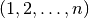. The DihedralGroup
is is the symmetries of a regular -gon with the
vertices enumerated clockwise from 1 to . It is generated by
the rotation and a reflection. Use the
gens() to see which reflection is used.
The collection of all even permutations—permutations with positive
sign—is a subgroup of obtained by the command AlternatingGroup.
sage: C = CyclicPermutationGroup(4); C
Cyclic group of order 4 as a permutation group
sage: C.list()
[(), (1,2,3,4), (1,3)(2,4), (1,4,3,2)]
sage: D = DihedralGroup(4); D
Dihedral group of order 8 as a permutation group
sage: D.list()
[(), (2,4), (1,2)(3,4), (1,2,3,4), (1,3), (1,3)(2,4), (1,4,3,2),
(1,4)(2,3)]
sage: D.gens()
[(1,2,3,4), (1,4)(2,3)]
sage: A = AlternatingGroup(4); A
Alternating group of order 4!/2 as a permutation group
sage: A.cardinality()
12
Another builtin group is the DiCyclicGroup (see the Group Properties article). Let’s check that the 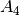 is not isomorphic to the dicyclic group with the same number of elements.
sage: B = DiCyclicGroup(3); B
Diyclic group of order 12 as a permutation group
sage: B.list()
[(), (5,6,7), (5,7,6), (1,2)(3,4), (1,2)(3,4)(5,6,7), (1,2)(3,4)(5,7,6), (1,3,2,4)(6,7), (1,3,2,4)(5,6), (1,3,2,4)(5,7), (1,4,2,3)(6,7), (1,4,2,3)(5,6), (1,4,2,3)(5,7)]
sage: A.is_isomorphic(B)
False
With any permutation group we may compute its cardinality, list its elements, compute the order of elements, etc. By using python’s list comprehensions (see Lists) we can create a list of elements with certain properties. In this case we can construct the list of all elements or order 2.
sage: S5 = SymmetricGroup(5)
sage: T = [s for s in S5 if s.order() == 2 ]; T
[(4,5), (3,4), (3,5), (2,3), (2,3)(4,5), (2,4), (2,4)(3,5), (2,5), (2,5)(3,4), (1,2), (1,2)(4,5), (1,2)(3,4), (1,2)(3,5), (1,3), (1,3)(4,5), (1,3)(2,4), (1,3)(2,5), (1,4), (1,4)(3,5), (1,4)(2,3), (1,4)(2,5), (1,5), (1,5)(3,4), (1,5)(2,3), (1,5)(2,4)]
Next we will construct a permutation group  and list
it’s members. This group has different elements from DihedralGroup(5),
but is isomorphic to it.
and list
it’s members. This group has different elements from DihedralGroup(5),
but is isomorphic to it.
sage: H= PermutationGroup(['(1,5),(3,4)', '(1,2,5,4,3)']); H
Subgroup of SymmetricGroup(5) generated by [(1,2,5,4,3), (1,5)(3,4)]
sage: H.list()
[(), (2,3)(4,5), (1,2)(3,5), (1,2,5,4,3), (1,3,4,5,2), (1,3)(2,4), (1,4,2,3,5), (1,4)(2,5), (1,5)(3,4), (1,5,3,2,4)]
sage: H.order()
10
sage: D = DihedralGroup(5)
sage: D
Dihedral group of order 10 as a permutation group
sage: D.list()
[(), (2,5)(3,4), (1,2)(3,5), (1,2,3,4,5), (1,3)(4,5), (1,3,5,2,4), (1,4)(2,3), (1,4,2,5,3), (1,5,4,3,2), (1,5)(2,4)]
sage: H == D
False
sage: H.is_isomorphic(D)
True
As with the symmetric group, we can pass a list of group elements to the method subgroup() to create a subgroup of any permutation group.
The list of all subgroups of a permutation group is obtained by the subgroups() method. It returns a list whose 0th element is the trivial subgroup.
sage: D = DihedralGroup(4)
sage: L = D.subgroups(); L
[Permutation Group with generators [()], Permutation Group with generators [(1,3)(2,4)], Permutation Group with generators [(2,4)], Permutation Group with generators [(1,3)], Permutation Group with generators [(1,2)(3,4)], Permutation Group with generators [(1,4)(2,3)], Permutation Group with generators [(2,4), (1,3)(2,4)], Permutation Group with generators [(1,2,3,4), (1,3)(2,4)], Permutation Group with generators [(1,2)(3,4), (1,3)(2,4)], Permutation Group with generators [(2,4), (1,2,3,4), (1,3)(2,4)]]
The join of two subgroups  and 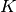, is the group
generated by the union of the two subgroups. We get the union of and by “adding” the
respective lists.
In the example below, we see that the cyclic permutation group
generated by 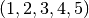 and the Klein four group generate the
whole symmetric group . Notice that the Klein four group is
a subgroup of , which itself is a subgroup of .
and 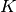, is the group
generated by the union of the two subgroups. We get the union of and by “adding” the
respective lists.
In the example below, we see that the cyclic permutation group
generated by 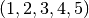 and the Klein four group generate the
whole symmetric group . Notice that the Klein four group is
a subgroup of , which itself is a subgroup of .
sage: K = KleinFourGroup(); K.list()
[(), (3,4), (1,2), (1,2)(3,4)]
sage: C = CyclicPermutationGroup(5)
sage: CjK = PermutationGroup(C.list()+K.list() )
Permutation Group with generators [(), (3,4), (1,2), (1,2)(3,4), (1,2,3,4,5), (1,3,5,2,4), (1,4,2,5,3), (1,5,4,3,2)]
sage: CjK.gens_small(); CjK.cardinality()
[(1,2)(3,5,4), (1,4,5,3)]
120
sage: CjK == SymmetricGroup(5)
True
The centralizer of an element (the
subgroup of elements that commute with ) and the center of a
group are constructed in the way you’d expect.
sage: D.center()
Subgroup of (Dihedral group of order 8 as a permutation group) generated by [(1,3)(2,4)]
sage: D.centralizer(D('(1,3)(2,4)'))
Subgroup of (Dihedral group of order 8 as a permutation group) generated by [(1,2,3,4), (1,4)(2,3)]
Quotients of Permutation Groups¶
In this section we explore normal subgroups and the quotient of a group by a normal subgroup. First we consider cosets and conjugation.
The alternating group has a subgroup isomorphic to the Klein four group that is normal.
sage: A4 = AlternatingGroup(4)
sage: g1 = A4('(1,4)(3,2)') ; g2 = A4('(2,4)(1,3)')
sage: H = A4.subgroup([g1,g2]);
sage: H.is_normal(A4); H.is_isomorphic(KleinFourGroup())
True
True
Let’s compare the right and left cosets of in .
sage: Hr = A4.cosets(H, side = 'right')
sage: Hl = A4.cosets(H, side = 'left')
sage: Hr; Hl
[[(), (1,2)(3,4), (1,3)(2,4), (1,4)(2,3)], [(2,3,4), (1,3,2), (1,4,3), (1,2,4)], [(2,4,3), (1,4,2), (1,2,3), (1,3,4)]]
[[(), (1,2)(3,4), (1,3)(2,4), (1,4)(2,3)], [(2,3,4), (1,2,4), (1,3,2), (1,4,3)], [(2,4,3), (1,2,3), (1,3,4), (1,4,2)]]
sage: Hr == Hl
False
We can see they are equal, but sage is comparing each coset as lists, and notes that the elements of the last two cosets are not listed in the same order. To rectify this, use sorted() to remind sage to order each coset. We are fortunate with this example that the cosets themselves are listed in the same order. Otherwise we would have to apply sorted() to the two lists of cosets.
sage: Hr_sorted = [sorted(S) for S in Hr]
sage: Hl_sorted = [sorted(S) for S in Hl]
sage: Hr_sorted == Hl_sorted
True
The conjugate by of an element  is the element .
The set of all conjugates of as varies is the conjugacy class of .
Below, we create a 3-cycle and compute its conjugacy class in and then in . This shows that two elements may be conjugate in but not in .
is the element .
The set of all conjugates of as varies is the conjugacy class of .
Below, we create a 3-cycle and compute its conjugacy class in and then in . This shows that two elements may be conjugate in but not in .
sage: S4 = SymmetricGroup(4)
sage: A4 = AlternatingGroup(4)
sage: g = S4('(1,3,4)')
sage: Set([a^(-1)*g*a for a in A4])
{(1,3,4), (1,4,2), (1,2,3), (2,4,3)}
sage: Set([a^(-1)*g*a for a in S4])
{(1,2,3), (1,3,4), (2,3,4), (2,4,3), (1,4,3), (1,2,4), (1,3,2), (1,4,2)}
The method conjugacy_class_representatives() chooses one element from each conjugacy class. Notice that there are two classes for 3-cycles in , but only one in .
sage: S4.conjugacy_classes_representatives()
[(), (1,2), (1,2)(3,4), (1,2,3), (1,2,3,4)]
sage: A4.conjugacy_classes_representatives()
[(), (1,2)(3,4), (1,2,3), (1,2,4)]
The conjugate by of a subgroup is the group
(recall that multiplication is left-to right). The group encompassing
and need not be specified; sage just considers
them inside the symmetric group containing all the integers that
appear.
sage: H = CyclicPermutationGroup(4)
sage: K = H.conjugate(PermutationGroupElement('(3,5)')); K
Permutation Group with generators [(1,2,5,4)]
The normalizer of in is the subgroup of elements
of such that .
sage: S4.normalizer(H)
Permutation Group with generators [(2,4), (1,2,3,4), (1,3)(2,4)]
sage: H1 = H.conjugate(PermutationGroupElement('(2,4)')); H1
Permutation Group with generators [(1,4,3,2)]
sage: H1 ==H
True
Sage can compute all normal subgroups of a group  . Let’s
verify that has 2 non-trivial normal subgroups, the
alternating group, and a group isomorphic to the Klein four group (but
not equal to sage’s standard Klein four group).
. Let’s
verify that has 2 non-trivial normal subgroups, the
alternating group, and a group isomorphic to the Klein four group (but
not equal to sage’s standard Klein four group).
sage: S4 = SymmetricGroup(4)
sage: S4norms = S4.normal_subgroups(); S4norms
[Permutation Group with generators [()], Permutation Group with generators [(1,3)(2,4), (1,4)(2,3)], Permutation Group with generators [(2,4,3), (1,3)(2,4), (1,4)(2,3)], Permutation Group with generators [(1,2), (1,2,3,4)]]
sage: K = S4norms[1]; K==KleiFourGroup()
False
sage: K.is_isomorphic(KleinFourGroup())
True
sage: A = S4norms[2]; A == AlternatingGroup(4)
True
We may now compute the quotient of by the normal subgroups and  in the previous example. As expected is isomorphic to . Since has 24 elements and has 4 elements, the quotient has 6 elements. We can check that it is isomorphic to .
in the previous example. As expected is isomorphic to . Since has 24 elements and has 4 elements, the quotient has 6 elements. We can check that it is isomorphic to .
sage: G.quotient(A)
Permutation Group with generators [(1,2)]
sage: H = G.quotient(K); H
Permutation Group with generators [(1,2)(3,6)(4,5), (1,3,5)(2,4,6)]
sage: H.is_isomorphic(SymmetricGroup(3))
True
Sage can also compute the normalizer of a subgroup of , which is the largest subgroup of containing in which is normal.
Here we compute the normalizer of the cyclic permutation group created above inside of . We get the dihedral group .
If we had used a different 4-cycle the resulting group may have been isomorphic to but not equal to it.
sage: G.normalizer(H).cardinality()
8
sage: HK.normalizer(H)== DihedralGroup(4)
True
For some groups the list of all subgroups may be large. To better understand the subgroups of we may compute one group from each conjugacy class. The following computations show that there are 30 subgroups of but only 11 up to conjugacy. Every other subgroup is not only isomorphic to one of the 11, given by conjugacy_classes_subgroups(), but is also isomorphic via conjugation by some element of .
sage: G
Symmetric group of order 4! as a permutation group
sage: G.subgroups()
[Permutation Group with generators [()], Permutation Group with generators [(1,2)(3,4)], Permutation Group with generators [(1,3)(2,4)], Permutation Group with generators [(1,4)(2,3)], Permutation Group with generators [(3,4)], Permutation Group with generators [(2,3)], Permutation Group with generators [(2,4)], Permutation Group with generators [(1,2)], Permutation Group with generators [(1,3)], Permutation Group with generators [(1,4)], Permutation Group with generators [(2,4,3)], Permutation Group with generators [(1,2,3)], Permutation Group with generators [(1,4,2)], Permutation Group with generators [(1,3,4)], Permutation Group with generators [(1,4)(2,3), (1,3)(2,4)], Permutation Group with generators [(1,2)(3,4), (3,4)], Permutation Group with generators [(1,4)(2,3), (2,3)], Permutation Group with generators [(1,3)(2,4), (2,4)], Permutation Group with generators [(1,2)(3,4), (1,3,2,4)], Permutation Group with generators [(1,3)(2,4), (1,4,3,2)], Permutation Group with generators [(1,4)(2,3), (1,2,4,3)], Permutation Group with generators [(3,4), (2,4,3)], Permutation Group with generators [(3,4), (1,3,4)], Permutation Group with generators [(1,2), (1,2,3)], Permutation Group with generators [(1,2), (1,4,2)], Permutation Group with generators [(1,3)(2,4), (1,4)(2,3), (1,2)], Permutation Group with generators [(1,2)(3,4), (1,3)(2,4), (1,4)], Permutation Group with generators [(1,4)(2,3), (1,2)(3,4), (1,3)], Permutation Group with generators [(1,3)(2,4), (1,4)(2,3), (2,4,3)], Permutation Group with generators [(1,3)(2,4), (1,4)(2,3), (2,4,3), (1,2)]]
sage: len(G.subgroups())
30
sage: G.conjugacy_classes_subgroups()
[Permutation Group with generators [()], Permutation Group with generators [(1,3)(2,4)], Permutation Group with generators [(3,4)], Permutation Group with generators [(2,4,3)], Permutation Group with generators [(1,4)(2,3), (1,3)(2,4)], Permutation Group with generators [(1,2)(3,4), (3,4)], Permutation Group with generators [(1,2)(3,4), (1,3,2,4)], Permutation Group with generators [(3,4), (2,4,3)], Permutation Group with generators [(1,3)(2,4), (1,4)(2,3), (1,2)], Permutation Group with generators [(1,3)(2,4), (1,4)(2,3), (2,4,3)], Permutation Group with generators [(1,3)(2,4), (1,4)(2,3), (2,4,3), (1,2)]]
sage: len(G.conjugacy_classes_subgroups())
11
Exercises:
- Find two subgroups of that are conjugate in but are not conjugate in .
Permutation Group Homomorphisms¶
To construct a homomorphism between two permutation groups we use the PermutationGroupMorphism() command. For an example let us use the two isomorphic groups that we constructed earlier.
sage: G = SymmetricGroup(5)
sage: r = G('(1,2,5,4,3)')
sage: s = G('(1,5),(3,4)')
sage: H = G.subgroup([r,s])
sage: H
Subgroup of SymmetricGroup(5) generated by [(1,2,5,4,3), (1,5)(3,4)]
sage: D = DihedralGroup(5)
sage: D
Dihedral group of order 10 as a permutation group
A homomorphism between these is constructed by listing an association between the generators of one group to the generators of the other. To see these we will use the gens() method provided by our groups
sage: H.gens()
[(1,2,5,4,3), (1,5)(3,4)]
sage: D.gens()
[(1,2,3,4,5), (1,5)(2,4)]
We construct the homomorphism that sends and as follows:
sage: phi = PermutationGroupMorphism(H,D,H.gens(), D.gens())
sage: phi
Homomorphism : Permutation Group with generators [(1,2,5,4,3), (1,5)(3,4)] --> Dihedral group of order 10 as a permutation group
We can apply this homomorphism as we would any function, by calling it.
sage: phi( '(2,3)(4,5)')
(1,3)(4,5)
sage: phi( '(1,5,3,2,4)')
(1,3,5,2,4)
sage: phi('(1,5)')
---------------------------------------------------------------------------
AttributeError Traceback (most recent call last)
...
AttributeError: 'str' object has no attribute '_gap_init_'
Note that we get an AttributeError because the permutation is not in the domain of phi().
The homomorphism also comes equipped with a few useful methods, the most useful is the kernel() method, which yields the kernel of the homomorphism. Since this homomorphism is an injection, the kernel is just the trivial group.
sage: phi.kernel()
Permutation Group with generators [()]
The direct product of two PermutationGroups produces another PermutationGroup, but in a larger symmetric group. The output is a list of length five consisting of the direct product followed by four homomorphisms. The first two homomorphism are the natural ones from each factor into the product. The second two homomorphisms are the natural projections from the product on to each factor.
sage: C4 = CyclicPermutationGroup(4)
sage: C3 = CyclicPermutationGroup(3)
sage: C4xC3 = C4.direct_product(C3); C4xC3
(Permutation Group with generators [(5,6,7), (1,2,3,4)], Permutation group morphism:
From: Cyclic group of order 4 as a permutation group
To: Permutation Group with generators [(5,6,7), (1,2,3,4)]
Defn: Embedding( Group( [ (1,2,3,4), (5,6,7) ] ), 1 ), Permutation group morphism:
From: Cyclic group of order 3 as a permutation group
To: Permutation Group with generators [(5,6,7), (1,2,3,4)]
Defn: Embedding( Group( [ (1,2,3,4), (5,6,7) ] ), 2 ), Permutation group morphism:
From: Permutation Group with generators [(5,6,7), (1,2,3,4)]
To: Cyclic group of order 4 as a permutation group
Defn: Projection( Group( [ (1,2,3,4), (5,6,7) ] ), 1 ), Permutation group morphism:
From: Permutation Group with generators [(5,6,7), (1,2,3,4)]
To: Cyclic group of order 3 as a permutation group
Defn: Projection( Group( [ (1,2,3,4), (5,6,7) ] ), 2 ))
If we just want the direct product group, we must select the 0th element of the direct product.
sage: C4xC3[0]
Permutation Group with generators [(1,2,3,4), (5,6,7)]
Exercises:
- There is a homomorphism from the dicyclic group of index
Matrix Groups¶
Please contribute!
Abelian Groups¶
Please contribute!
Linear Algebra¶
Vectors and Matrices¶
To create a vector, use the vector() command with a list of
entries. Scalar multiples and the dot product are straightforward to
compute. As with lists, vectors are indexed starting from  .
.
sage: v= vector([1,2,3,4])
sage: v[0]
1
sage: v[4]
ERROR: An unexpected error occurred while tokenizing input
Arithmetic on vectors is what one would expect. Sage will produce an error message if you add two vectors of different lengths.
sage: 7*v
(7, 14, 21, 28)
sage: v + vector([2,1,4,5])
(3, 3, 7, 9)
sage: v*v
sage: v + vector([2,1,4])
---------------------------------------------------------------------------
TypeError Traceback (most recent call last)
/Users/mosullivan/Work/Sage/Tutorial/sdsu-sage-tutorial/<ipython console> in <module>()
/Applications/sage/local/lib/python2.6/site-packages/sage/structure/element.so in sage.structure.element.ModuleElement.__add__ (sage/structure/element.c:7627)()
/Applications/sage/local/lib/python2.6/site-packages/sage/structure/coerce.so in sage.structure.coerce.CoercionModel_cache_maps.bin_op (sage/structure/coerce.c:6995)()
TypeError: unsupported operand parent(s) for '+': 'Ambient free module of rank 4 over the principal ideal domain Integer Ring' and 'Ambient free module of rank 3 over the principal ideal domain Integer Ring'
We use the matrix() command to construct a matrix with a list of the rows of the matrix as the argument.
sage: matrix([[1,2],[3,4]])
[1 2]
[3 4]
We can also construct a matrix by specifying all of the coordinates in a single matrix while specifying the dimensions of the matrix. The following command creates a matrix with  rows and
rows and  columns.
columns.
sage: matrix(4,2, [1,2,3,4,5,6,7,8])
[1 2]
[3 4]
[5 6]
[7 8]
If the matrix that we want to construct is square we can omit the number of columns from the argument.
sage: matrix(2,[1,2,3,4])
[1 2]
[3 4]
By default, Sage constructs the matrix over the smallest universe which contains the coordinates.
sage: parent(matrix(2,[1,2,3,4]))
Full MatrixSpace of 2 by 2 dense matrices over Integer Ring
sage: parent(matrix(2,[1,2/1,3,4]))
Full MatrixSpace of 2 by 2 dense matrices over Rational Field
sage: parent(matrix(2,[x,x^2,x-1,x^3])
Full MatrixSpace of 2 by 2 dense matrices over Symbolic Ring
We can specify the universe for the coordinates of a matrix or vector by giving it as an optional argument.
sage: matrix(QQ,2,[1.1,1.2,1.3,1.4])
[11/10 6/5]
[13/10 7/5]
There are shortcuts in Sage to construct some of the more commonly used matrices. To construct the identity matrix we use the identity_matrix() function.
sage: identity_matrix(3)
[1 0 0]
[0 1 0]
[0 0 1]
To construct the zero matrix we may use zero_matrix() or the regular matrix function with no list input.
sage: zero_matrix(2,2)
[0 0]
[0 0]
sage: matrix(2)
[0 0]
[0 0]
sage: matrix(2,3)
[0 0 0]
[0 0 0]
Note that if we use zero_matrix() we must input two integers.
Exercises:
Use Sage to construct the vector
Construct the following matrix over the rational numbers in Sage.
Construct a 10x10 identity matrix.
Construct a 20x10 zero matrix.
Matrix Arithmetic¶
You should be familiar with Vectors and Matrices.
We may use +, -, * and ^ for matrix addition, subtraction, multiplication and exponents.
sage: A=matrix(2,[1,1,0,1])
sage: B=matrix(2,[1,0,1,1])
sage: A+B
[2 1]
[1 2]
sage: A*B
[2 1]
[1 1]
sage: B*A
[1 1]
[1 2]
sage: A-B
[ 0 1]
[-1 0]
sage: A^3
[1 3]
[0 1]
We can compute the inverse of a matrix by raising it to the  -th power.
-th power.
sage: A^-1
[ 1 -1]
[ 0 1]
If the matrix is not invertible Sage will complain about a ZeroDivisionError.
sage: A = matrix([[4,2],[8,4]])
sage: A^-1
---------------------------------------------------------------------------
ZeroDivisionError Traceback (most recent call last)
... (Long error message)
ZeroDivisionError: input matrix must be nonsingular
When multiplying vectors and matrices; vectors can be considered both as rows or as columns, so you can multiply a 3-vector by a 3×n matrix on the right, or by a n×3 matrix on the left.
sage: x = vector([12,3,3])
sage: x
(12, 3, 3)
sage: A
[1 2 3]
[4 5 6]
sage: A*x
(27, 81)
sage: B = transpose(A)
sage: B
[1 4]
[2 5]
[3 6]
sage: x*B
(27, 81)
We use the det() method to calculate the determinant of a square matrix.
sage: A= matrix([[-1/2,0,-1],[0,-2,2],[1,0,-1/2]]); A
[-1/2 0 -1]
[ 0 -2 2]
[ 1 0 -1/2]
sage: A.det()
-5/2
To check if a matrix is invertible we use the is_invertible() method.
sage: A=matrix(2,[1,1,0,1])
sage: A.is_invertible()
True
sage: A.det()
1
The invertablility of a matrix depends on the ring or field it is defined over. For example:
sage: B=matrix(2,[1,2,3,4])
sage: B.is_invertible()
False
In this example, Sage assumes that the matrix B is defined over the integers and not the rationals, where it does not have an inverse. But if we define B as a matrix over the rationals, we obtain different results.
sage: B = matrix(QQ, 2,[1,2,3,4])
sage: B
[1 2]
[3 4]
sage: B.is_invertible()
True
If we ask Sage to compute the inverse of a matrix over the integers it will automatically coerce B into a matrix over the rationals if necessary.
sage: B = matrix(2,[1,2,3,4])
sage: parent(B)
Full MatrixSpace of 2 by 2 dense matrices over Integer Ring
sage: B^-1
[ -2 1]
[ 3/2 -1/2]
sage: parent(B^-1)
Full MatrixSpace of 2 by 2 dense matrices over Rational Field
Exercises:
Consider the matrices:
Which of the following matrices is invertable over ? What about ?
Matrix Manipulation¶
You should be familiar with Vectors and Matrices and Matrix Arithmetic.
In this section we will cover some of the commands that we can use to manipulate matrices. Let’s begin by defining a matrix over the rational numbers.
sage: M = matrix(QQ, [[1,2,3],[4,5,6],[7,8,9]]); M
[1 2 3]
[4 5 6]
[7 8 9]
To get a list of row and column vectors, we use the rows() and columns() methods.
sage: M.rows()
[(1, 2, 3), (4, 5, 6), (7, 8, 9)]
sage: M.columns()
[(1, 4, 7), (2, 5, 8), (3, 6, 9)]
The following examples show how to get a particular row or column vector. Remember tl that Sage follows Python’s convention that all of the indicies begin with zero.
sage: M.row(0)
(1, 2, 3)
sage: M.row(2)
(7, 8, 9)
sage: M.column(1)
(2, 5, 8)
sage: M.column(2)
(3, 6, 9)
You can even get a list of the diagonal entries, by calling the diagonal() method.
sage: M.diagonal()
[1, 5, 9]
Sage also allows us to contruct new matrices from the row and/or column vectors.
sage: M.matrix_from_columns([0,2])
[1 3]
[4 6]
[7 9]
sage: M.matrix_from_rows([0,2])
[1 2 3]
[7 8 9]
sage: M.matrix_from_rows_and_columns([0,2],[0,2])
[1 3]
[7 9]
It should be noted that the matrix_from_rows_and_columns() returns the intersection of the rows and columns specified. In the above example we are selecting the matrix that consists of the four ‘corners’ of our  matrix.
matrix.
Next we will discuss some of the elementary row operations. To multiply a row or column by a number we use the rescale_row() or rescale_column() methods. Note that these commands change the matrix itself.
sage: M.rescale_row(1,-1/4); M
[ 1 2 3]
[ -1 -5/4 -3/2]
[ 7 8 9]
sage: M.rescale_col(2,-1/3); M
[ 1 2 -1]
[ -1 -5/4 1/2]
[ 7 8 -3]
sage: M.rescale_row(1,-4); M
[ 1 2 -1]
[ 4 5 -2]
[ 7 8 -3]
We can add a multiple of a row or column to another row or column by
using the add_multiple_of_row() method. The first command takes
times the row and adds it to row .
sage: M.add_multiple_of_row(1,0,-4); M
[ 1 2 -1]
[ 0 -3 2]
[ 7 8 -3]
sage: M.add_multiple_of_row(2,0,-7); M
[ 1 2 -1]
[ 0 -3 2]
[ 0 -6 4]
The same can be done with the column vectors, which are also zero indexed.
sage: M.add_multiple_of_column(1,0,-2);M
[ 1 0 -1]
[ 0 -3 2]
[ 0 -6 4]
sage: M.add_multiple_of_column(2,0,1);M
[ 1 0 0]
[ 0 -3 2]
[ 0 -6 4]
If we don’t like the ordering of our rows or colums we can swap them in place.
sage: M.swap_rows(1,0); M
[ 0 -3 2]
[ 1 0 0]
[ 0 -6 4]
sage: M.swap_columns(0,2); M
[ 2 -3 0]
[ 0 0 1]
[ 4 -6 0]
If we want to change a row or column of M then we use the set_column() or set_row() methods.
sage: M.set_column(0,[1,2,3]);M
[ 1 -3 0]
[ 2 0 1]
[ 3 -6 0]
sage: M.set_row(0,[1,2,5]);M
[ 1 2 5]
[ 2 0 1]
[ 3 -6 0]
And finally if we want to change a whole “block” of a matrix, we use the set_block() method with the coordinates of where we want the upper left corner of the block to begin.
sage: B = matrix(QQ,[ [1,0 ],[0,1]]); B
[1 0]
[0 1]
sage: M.set_block(1,1,B); M
[1 2 5]
[2 1 0]
[3 0 1]
Of course, if all we want is the echelon form of the matrix we can use either the echelon_form() or echelonize() methods. The difference between the two is the former returns a copy of the matrix in echelon form without changing the original matrix and the latter alters the matrix itself.
sage: M.echelon_form()
[1 0 0]
[0 1 0]
[0 0 1]
sage: M.echelonize(); M
[ 1 0 0]
[ 0 1 0]
[ 0 0 1]
Next we use the augmented matrix and the echelon form to solve a system of the form . First we define the matrix M and the vector b
sage: M = matrix(QQ, [[2,4,6,2,4],[1,2,3,1,1],[2,4,8,0,0],[3,6,7,5,9]]); M
[2 4 6 2 4]
[1 2 3 1 1]
[2 4 8 0 0]
[3 6 7 5 9]
sage: b = vector(QQ, [56, 23, 34, 101])
Then we construct the augmented matrix , store it in the variable M_aug and compute it’s echelon form.
sage: M_aug = M.augment(b); M_aug
[ 2 4 6 2 4 56]
[ 1 2 3 1 1 23]
[ 2 4 8 0 0 34]
[ 3 6 7 5 9 101]
sage: M_aug.echelon_form()
[ 1 2 0 4 0 21]
[ 0 0 1 -1 0 -1]
[ 0 0 0 0 1 5]
[ 0 0 0 0 0 0]
This tells us that we have a one dimensional solution space that consists of vectors of the form .
sage: M*vector([21,0,-1,0,5])
(56, 23, 34, 101)
sage M*vector([-2,1,0,0,0])
(0, 0, 0, 0)
If all we need is a single solution to this system, we can use the solve_right() method.
sage: M.solve_right(b)
(21, 0, -1, 0, 5)
Exercises:
Consider the matrix.
Use only the elementary row operations discussed to put
Using the commands discussed in this section, transform the matrix on the left into the matrix on the right.
Vector and Matrix Spaces¶
It is sometimes useful to create the space of all matrices of particular dimension, for which we use the MatrixSpace() function. We must specify the field (or indeed any ring) where the entries live.
sage: MatrixSpace(QQ,2,3)
Full MatrixSpace of 2 by 3 dense matrices over Rational Field
If we input a ring  and an integer we get the
matrix ring of
matrices over . Coercion can be used to construct the zero matrix, the
indentity matrix, or a matrix with specified entries as shown.
and an integer we get the
matrix ring of
matrices over . Coercion can be used to construct the zero matrix, the
indentity matrix, or a matrix with specified entries as shown.
sage: Mat = MatrixSpace(ZZ,2); Mat
Full MatrixSpace of 2 by 2 dense matrices over Integer Ring
sage: Mat(1)
[1 0]
[0 1]
sage: Mat(0)
[0 0]
[0 0]
sage: Mat([1,2,3,4])
[1 2]
[3 4]
We may compute various spaces associated to a matrix.
sage: Mat = MatrixSpace(QQ, 3,4)
sage: A = Mat([[1,2,3,4], [1,3,4,4],[2,5,7,8]])
sage: A
[1 2 3 4]
[1 3 4 4]
[2 5 7 8]
sage: A.rank()
2
sage: A.right_kernel()
Vector space of degree 4 and dimension 2 over Rational Field
Basis matrix:
[ 1 0 0 -1/4]
[ 0 1 -1 1/4]
sage: A.left_kernel()
Vector space of degree 3 and dimension 1 over Rational Field
Basis matrix:
[ 1 1 -1]
sage: A.row_space()
Vector space of degree 4 and dimension 2 over Rational Field
Basis matrix:
[1 0 1 4]
[0 1 1 0]
Exercises:
For the following 5x3 matrix:
Use Sage to compute the bases for the following spaces:
- The right and left kernel.
- The row space.
- The column space.
Mini-Topic: The Jordan Canonical Form¶
For every linear transformation there is a basis of such that the matrix is in an almost diagonal form. This unique matrix is called the Jordan Canonical Form of . For more information on this please refer to this article on Wikipedia. To demonstrate some common tools that we use in Sage we will compute this basis for the linear transformation
We will begin by defining in Sage.
sage: T(x,y,z,t) = (2*x+y, 2*y+1, 3*z, y - z + 3*t)
Now, let’s use the standard ordered basis of to find the matrix form of .
sage: T(1,0,0,0), T(0,1,0,0), T(0,0,1,0), T(0,0,0,1)
((2, 1, 0, 0), (1, 3, 0, 1), (0, 1, 3, -1), (0, 1, 0, 3))
Note that since Sage uses rows to construct a matrix we must use the transpose() function to get the matrix we expect.
sage: M = transpose(matrix([[2,1,0,0],[0,2,1,0], [0,0,3,0],[0,1,-1,3]])); M
[ 2 1 0 0]
[ 0 2 1 0]
[ 0 0 3 0]
[ 0 1 -1 3]
Once we have the matrix we will compute it’s characteristic polynomial and then factor it.
sage: f = M.characteristic_polynomial(); f
x^4 - 10*x^3 + 37*x^2 - 60*x + 36
sage: f.factor()
(x - 3)^2 * (x - 2)^2
Above we have two eigenvalues and and both are of algebraic multiplicity . Now we need to look at the associated eigenvectors. To do so we will use the eigenvectors_right() method.
sage: ev_M = M.eigenvectors_right(); ev_M
[(3, [
(1, 1, 1, 0),
(0, 0, 0, 1)
], 2), (2, [
(1, 0, 0, 0)
], 2)]
sage: ev_M[1][1][0]
(1, 0, 0, 0)
What is returned is a list() of ordered tripples. Each triple is
consists of an eigenvalue followed by a list with a basis for the
associated eigenspace followed by the dimension of the associated eigenspace. Note that the eigenvalue has algebraic multiplicity of but geometric multiplicity only . This means that we will have to compute a generalized eigenvector for this eigenvalue. We will do this by solving the system , where is the eigenvector . I will use the echelon_form() of the augmented matrix to solve the system.
sage: (M - 2*identity_matrix(4)).augment(ev_M[1][1][0])
[ 0 1 0 0 1]
[ 0 0 1 0 0]
[ 0 0 1 0 0]
[ 0 1 -1 1 0]
sage: _.echelon_form()
[ 0 1 0 0 1]
[ 0 0 1 0 0]
[ 0 0 0 1 -1]
[ 0 0 0 0 0]
sage: gv = vector([1,1,0,-1]); gv
(1, 1, 0, -1)
With the generalized eigenvector gv, we now have the right number of linearly independent vectors to form a basis for our Jordan Form matrix. We will next form the change of basis matrix that consists of these vectors as columns.
sage: S = transpose( matrix( [[1,1,1,0],[0,0,0,1],[1,0,0,0],gv])); S
[ 1 0 1 1]
[ 1 0 0 1]
[ 1 0 0 0]
[ 0 1 0 -1]
Now we will compute the matrix representation of with respect to this basis.
sage: S.inverse()*M*S
[3 0 0 0]
[0 3 0 0]
[0 0 2 1]
[0 0 0 2]
And there it is, the Jordan Canonical Form of the linear transformation . Of course we could have just used Sage’s built in jordan_form() method to compute this directly.
sage: M.jordan_form()
[3|0|0 0]
[-+-+---]
[0|3|0 0]
[-+-+---]
[0|0|2 1]
[0|0|0 2]
But that wouldn’t be any fun!
Exercises:
Compute a jordan basis for the following matrix using the steps outlined in this section.
Rings¶
Polynomial Rings¶
Constructing polynomial rings in Sage is fairly straightforward. We just specify the name of the “indeterminate” variable as well as the coefficient ring.
sage: R.<x>=PolynomialRing(ZZ)
sage: R
Univariate Polynomial Ring in x over Integer Ring
Once the polynomial ring has been defined we can construct a polynomial without any special coercions.
sage: p = 2*x^2 + (1/2)*x + (3/5)
sage: parent(p)
Univariate Polynomial Ring in x over Rational Field
Though is the most common choice for a variable, we could have chosen
any letter for the indeterminate.
sage: R.<Y>=PolynomialRing(QQ)
sage: R
Univariate Polynomial Ring in Y over Rational Field
Polynomials with rational coefficients in Y are now valid objects in Sage.
sage: q = Y^4 + (1/2)*Y^3 + (1/3)*Y + (1/4)
sage: q
Y^4 + 1/2*Y^3 + 1/3*Y + 1/4
sage: parent(q)
Univariate Polynomial Ring in Y over Rational Field
We can define polynomial rings over any ring or field.
sage: Z7=Integers(7)
sage: R.<x>=PolynomialRing(Z7); R
Univariate Polynomial Ring in x over Ring of integers modulo 7
When entering a polynomial into Sage the coefficients are automatically coerced into the ring or field specified.
sage: p = 18*x^2 + 7*x + 16; p
4*x^2 + 2
sage: parent(p)
Univariate Polynomial Ring in x over Ring of integers modulo 7
Of course this coercion has to be well defined.
sage: q = x^4 + (1/2)*x^3 + (1/3)*x^2 + (1/4)*x + (1/5)
---------------------------------------------------------------------------
TypeError Traceback (most recent call last) ...
TypeError: unsupported operand parent(s) for '*': 'Rational Field' and 'Univariate Polynomial Ring in x over Ring of integers modulo 7'
When prudent, Sage will extend the universe of definition to fit the polynomial entered. For example, if we ask for a rational coefficient in a polynomial ring over , Sage will naturally coerce this polynomial into a ring over
sage: S.<y>=PolynomialRing(ZZ)
sage: 1/2*y
1/2*y
sage: parent(1/2*y)
Univariate Polynomial Ring in y over Rational Field
It should be noted that the ring S hasn’t been changed at all. Nor is (1/2)*y` in the universe ``S. This can be easily verified.
sage: S
Univariate Polynomial Ring in y over Integer Ring
sage: (1/2)*y in S
False
Once constructed, the basic arithmetic with polynomials is straightforward.
sage: R.<x>=PolynomialRing(QQ)
sage: f=x+1
sage: g=x^2+x-1
sage: h=1/2*x+3/4
sage: f+g
x^2 + 2*x
sage: g-h
x^2 + 1/2*x - 7/4
sage: f*g
x^3 + 2*x^2 - 1
sage: h^3
1/8*x^3 + 9/16*x^2 + 27/32*x + 27/64
We can also divide elements of the polynomial ring, but this changes the parent.
sage: f/g
(x + 1)/(x^2 + x - 1)
sage: parent(f/g)
Fraction Field of Univariate Polynomial Ring in x over Rational Field
A fundamental attribute of a polynomial is its degree. We use the degree() method to calculate this.
sage: R.<x>=PolynomialRing(QQ)
sage: (x^3+3).degree()
3
sage: R(0).degree()
-1
Notice that by convention Sage sets the degree of 0 to be -1.
The polynomial ring over a field has a division algorithm. As with the integers, we may use the // operator to determine the quotient and the % operator to determine the remainder of a division.
sage: R.<x>=PolynomialRing(Integers(7))
sage: f=x^6+x^2+1
sage: g=x^3+x+1
sage: f // g
x^3 + 6*x + 6
sage: f % g
2*x^2 + 2*x + 2
Additionally, if the coefficients of the polynomial are in or , we may use the divmod() command to compute both at the same time.
sage: S.<y>=PolynomialRing(QQ)
sage: a=(y+1)*(y^2+1)
sage: b=(y+1)*(y+5)
sage: a // b
y - 5
sage: a % b
26*y + 26
sage: divmod(a,b)
(y - 5, 26*y + 26)
For a field  , the polynomial ring has a division algorithm, so we have a unique greatest common divisor (gcd) of polynomials. This can be computed using the gcd() command.
, the polynomial ring has a division algorithm, so we have a unique greatest common divisor (gcd) of polynomials. This can be computed using the gcd() command.
sage: R.<x> = PolynomialRing(QQ)
sage: p = x^4 + 2*x^3 + 2*x^2 + 2*x + 1
sage: q = x^4 - 1
sage: gcd(p,q)
x^3 + x^2 + x + 1
The greatest common divisor of two integers can be represented as a linear combination of the two integers, and the extended Euclidean algorithm is used to determine one such linear combination. Similarly, the greatest common divisor of polynomials and may be written in the form  for some polynomials
for some polynomials  and
and  . We may use the xgcd() function to compute the multipliers and .
. We may use the xgcd() function to compute the multipliers and .
sage: R.<x>=PolynomialRing(ZZ)
sage: a=x^4-1
sage: b=(x+1)*x
sage: xgcd(a,b)
(x + 1, -1, x^2 - x + 1)
sage: d,u,v=xgcd(a,b)
sage: a*u+b*v
x + 1
To check whether a polynomial is irreducible, we use it’s is_irreducible() method.
sage: R.<x>=PolynomialRing(Integers(5))
sage: (x^3+x+1).is_irreducible()
True
sage: (x^3+1).is_irreducible()
False
This method is only suitable for polynomial rings that are defined over a field, as polynomials defined more generally may not posses a unique factorization.
To compute the factorization of a polynomial, where defined, we use the factor() command.
sage: R.<x>=PolynomialRing(Integers(5))
sage: factor(x^3+x+1)
x^3 + x + 1
sage: factor(x^3+1)
(x + 1) * (x^2 + 4*x + 1)
In the example above, we see a confirmation that is
irreducible in whereas  may be
factored, hence is reducible.
may be
factored, hence is reducible.
We can also consider polynomials in as functions from to by evaluation, that is by substituting the indeterminate variable with a member of the coefficient ring. Evaluation of polynomials in Sage works as expected, by calling the polynomial like a function.
sage: R.<x>=PolynomialRing(Integers(3))
sage: f=2*x+1
sage: f(0)
1
sage: f(1)
0
sage: f(2)
2
Calculating the roots, or zeros, of a polynomial can be done by using the roots() method.
sage: ((x-1)^2*(x-2)*x^3).roots()
[(2, 1), (1, 2), (0, 3)]
Sage returns a list of pairs where r is the root and m is it’s multiplicity. Of course, a polynomial need not have any roots and in this case the empty list is returned.
sage: (x^2+1).roots()
[]
Multivariate Polynomial Rings¶
Defining a polynomial ring with more that one variable can be done easily by supplying an extra argument to PolynomialRing() which specifies the number of variables desired.
sage: R.<x,y,z> = PolynomialRing(QQ, 3)
sage: p = -1/2*x - y*z - y + 8*z^2; p
-y*z + 8*z^2 - 1/2*x - y
Unlike with univariate polynomials, there is not a single way that we can order the terms of a polynomial. So to specify things like the degree and the leading term of a polynomial we must first fix a rule for deciding when one term is larger than another. If no argument is specified, Sage defaults to the graded reverse lexicographic ordering, sometimes referred to as grevlex, to make these decisions. To read more about Monomial Orderings, see this page on Wikipedia.
To access a list of the monomials with nonzero coefficients in
 , you use the monomials() method.
, you use the monomials() method.
sage: p.monomials()
[y*z, z^2, x, y]
These monomials are listed in descending order using the term ordering specified when the ring was constructed.
To access a list of coefficients we use the coefficients() method.
sage: p.coefficients()
[-1, 8, -1/2, -1]
The list of coefficients is provided in the same order as the monomial listing computed earlier. This means that we can create a list of terms of our polynomial by zip()-ing up the two lists.
sage: [ a*b for a,b in zip(p.coefficients(),p.monomials())]
[-y*z, 8*z^2, -1/2*x, -y]
Often you want to compute information pertaining to the largest, or leading, term. We can compute the lead coefficient, leading monomial, and the lead term as follows:
sage: p.lc()
-1
sage:
sage: p.lm()
y*z
sage: p.lt()
-y*z
We can also compute the polynomial’s total degree using the total_degree() method.
sage: p.total_degree()
2
The exponents of each variable in each term, once again specified in descending order, is computed using the exponents() method.
sage: p.exponents()
[(0, 1, 1), (0, 0, 2), (1, 0, 0), (0, 1, 0)]
and the exponent of the lead term is computed by chaining together two of the methods just presented.
sage: p.lm().exponents()
[(0, 1, 1)]
To change the term ordering we must reconstruct both the ring itself and all of the polynomials with which we were working. The following code constructs a multivariate polynomial ring in and  using the lexicographic monomial ordering.
using the lexicographic monomial ordering.
sage: R.<x,y,z> = PolynomialRing(QQ,3,order='lex')
sage: p = -1/2*x - y*z - y + 8*z^2; p
-1/2*x - y*z - y + 8*z^2
Once the term order changes, all of the methods discussed earlier, even how Sage displays the polynomial, take this into account.
sage: p.lm()
x
sage: p.lc()
-1/2
sage: p.lt()
-1/2*x
sage: p.monomials()
[x, y*z, y, z^2]
Note that the order in which the indeterminates are listed affects the monomial ordering. In the example above we have the lexicographic ordering, with . We may redefine the ring to use the lexicographic order .
sage: R.<z,y,x> = PolynomialRing(QQ,3,order='lex')
sage: p = -1/2*x - y*z - y + 8*z^2
sage: p
8*z^2 - z*y - y - 1/2*x
sage: p.lm()
z^2
sage: p.lc()
8
sage: p.lt()
8*z^2
Note again how all of the methods automatically take the new ordering into account.
Finally we can reduce a polynomial modulo a list of polynomials using the mod() method.
sage: r = -x^2 + 1/58*x*y - y + 1/2*z^2
sage: r.mod([p,q])
-238657765/29696*y^2 + 83193/14848*y*z^2 + 68345/14848*y - 1/1024*z^4 + 255/512*z^2 - 1/1024
Exercises:
- Use Sage to find out which of the following polynomials with rational coefficients are irreducible.
- Factor all of the polynomials over .
- Compute all of the roots and of the following polynomials defined over . Compare this list to their factorizations.
Ideals and Quotients¶
In this section we will construct and do common computations with ideals and quotient rings.
Ideals¶
Once a ring is constructed and a list of generating elements have been selected, the ideal generated by this list is constructed by using the * operator.
sage: R.<x> = PolynomialRing(QQ)
sage: I = [2*x^2 + 8*x - 10, 10*x - 10]*R; I
Principal ideal (x - 1) of Univariate Polynomial Ring in x over Rational Field
sage: J = [ x^2 + 1, x^3 + x ]*R; J
Principal ideal (x^2 + 1) of Univariate Polynomial Ring in x over Rational Field
sage: K = [ x^2 + 1, x - 2]*R; K
Principal ideal (1) of Univariate Polynomial Ring in x over Rational Field
Sage automatically reduces the set of generators. This can be seen by using the gens() method which returns the list of the ideal’s generating elements.
sage: I.gens()
(x - 1,)
sage: J.gens()
(x^2 + 1,)
sage: K.gens()
(1,)
Ideal membership can be determined by using the in conditional.
sage: R(x-1) in I
True
sage: R(x) in I
False
sage: R(2) in J
False
sage: R(2) in K
True
You can determine some properties of the ideal by using the corresponding is_ methods. For example, to determine weather the ideals are prime, principal, or idempotent we enter the following:
sage: J.is_prime()
True
sage: K.is_prime()
False
sage: I.is_idempotent()
False
sage: K.is_principal()
True
Ideals in Multivarate Polynomial Rings¶
To construct an ideal within a multivariate polynomial ring, we must first construct the Polynomial ring with a term ordering and a collection of polynomials that will generate the ideal.
sage: R.<x,y,z> = PolynomialRing(QQ,3,order='lex')
sage: p = -1/2*x - y*z - y + 8*z^2
sage: q = -32*x + 2869*y - z^2 - 1
The ideal is constructed in the same manner as before.
sage: I = [p,q]*R
sage: I
Ideal (-1/2*x - y*z - y + 8*z^2, -32*x + 2869*y - z^2 - 1) of Multivariate Polynomial Ring in x, y, z over Rational Field
When the ring is a multivariate polynomial, we can compute a special list of generators for I, called a groebner_basis.
sage: I.groebner_basis()
[x - 2869/32*y + 1/32*z^2 + 1/32, y*z + 2933/64*y - 513/64*z^2 - 1/64]
There are different algorithms for computing a Groebner basis. We can change the algorithm by supplying an optional argument to the groebner_basis() command. The following commands compute a Groebner basis using the Buchberger algorithm while showing the intermediate results. Very useful for teaching!
sage: set_verbose(3)
sage: I.groebner_basis('toy:buchberger')
(-32*x + 2869*y - z^2 - 1, -1/2*x - y*z - y + 8*z^2) => -2*y*z - 2933/32*y + 513/32*z^2 + 1/32
G: set([-2*y*z - 2933/32*y + 513/32*z^2 + 1/32, -1/2*x - y*z - y + 8*z^2, -32*x + 2869*y - z^2 - 1])
(-1/2*x - y*z - y + 8*z^2, -32*x + 2869*y - z^2 - 1) => 0
G: set([-2*y*z - 2933/32*y + 513/32*z^2 + 1/32, -1/2*x - y*z - y + 8*z^2, -32*x + 2869*y - z^2 - 1])
(-1/2*x - y*z - y + 8*z^2, -2*y*z - 2933/32*y + 513/32*z^2 + 1/32) => 0
G: set([-2*y*z - 2933/32*y + 513/32*z^2 + 1/32, -1/2*x - y*z - y + 8*z^2, -32*x + 2869*y - z^2 - 1])
(-32*x + 2869*y - z^2 - 1, -2*y*z - 2933/32*y + 513/32*z^2 + 1/32) => 0
G: set([-2*y*z - 2933/32*y + 513/32*z^2 + 1/32, -1/2*x - y*z - y + 8*z^2, -32*x + 2869*y - z^2 - 1])
3 reductions to zero.
[x + 2*y*z + 2*y - 16*z^2, x - 2869/32*y + 1/32*z^2 + 1/32, y*z + 2933/64*y - 513/64*z^2 - 1/64]
We can compute the various elimination ideals by using the elimination_ideal() method.
sage: I.elimination_ideal([x])
Ideal (64*y*z + 2933*y - 513*z^2 - 1) of Multivariate Polynomial Ring in x, y, z over Rational Field
sage: I.elimination_ideal([x,y])
Ideal (0) of Multivariate Polynomial Ring in x, y, z over Rational Field
sage: I.elimination_ideal([x,z])
Ideal (0) of Multivariate Polynomial Ring in x, y, z over Rational Field
sage: I.elimination_ideal([x])
Ideal (64*y*z + 2933*y - 513*z^2 - 1) of Multivariate Polynomial Ring in x, y, z over Rational Field
sage: I.elimination_ideal([y])
Ideal (64*x*z + 2933*x + 2*z^3 - 45902*z^2 + 2*z + 2) of Multivariate Polynomial Ring in x, y, z over Rational Field
sage: I.elimination_ideal([z])
Ideal (263169*x^2 + 128*x*y^2 - 47095452*x*y + 16416*x - 11476*y^3 + 2106993608*y^2 - 1468864*y + 256) of Multivariate Polynomial Ring in x, y, z over Rational Field
sage: I.elimination_ideal([x,y])
Ideal (0) of Multivariate Polynomial Ring in x, y, z over Rational Field
Quotient Rings¶
To construct the quotient ring of a ring with an ideal we use the quotient() method.
sage: R = ZZ
sage: I = R*[5]
sage: I
Principal ideal (5) of Integer Ring
sage: Q = R.quotient(I)
sage: Q
Ring of integers modulo 5
To preform arithmetic in the quotient ring, we must first coerce elements into this universe. For more on why we do this see Universes and Coercion.
sage: Q(10)
0
sage: Q(12)
2
sage: Q(10) + Q(12)
2
sage: Q(10 + 12)
2
When working with quotients of polynomial rings it is a good idea to give the indeterminate a new name.
sage: R.<x> = PolynomialRing(ZZ)
sage: parent(x)
Univariate Polynomial Ring in x over Integer Ring
sage: I = R.ideal(x^2 + 1)
sage: Q.<a> = R.quotient(I)
sage: parent(a)
Univariate Quotient Polynomial Ring in a over Integer Ring with modulus x^2 + 1
sage: a^2
-1
sage: x^2
x^2
Then we can do arithmetic in this quotient ring without having to explicitly coerce all of our elements.
sage: 15*a^2 + 20*a + 1
20*a - 14
sage: (15 + a)*(14 - a)
-a + 211
Properties of Rings¶
You can check some of the properties of the rings which have been constructed. For example, to check whether a ring is an integral domain or a field we use the is_integral_domain() or is_field() methods.
sage: QQ.is_field()
True
sage: ZZ.is_integral_domain()
True
sage: ZZ.is_field()
False
sage: R=Integers(15)
sage: R.is_integral_domain()
False
sage: S=Integers(17)
sage: S.is_field()
True
These properties are often determined instantaneously since they are built into the definitions of the rings and not calculated on the fly.
For a complete listing of properties that are built into a ring, you can use Sage’s built in tab-completion. For example, to see all of the properties which can be determined for the rational numbers we type QQ.is then the tab key. What we get is a list of all of the properties that we can compute.
sage: QQ.is[TAB]
QQ.is_absolute QQ.is_finite QQ.is_ring
QQ.is_atomic_repr QQ.is_integral_domain QQ.is_subring
QQ.is_commutative QQ.is_integrally_closed QQ.is_zero
QQ.is_exact QQ.is_noetherian
QQ.is_field QQ.is_prime_field
The characteristic of the ring can be computed using the ring’s characteristic() method.
sage: QQ.characteristic()
0
sage: R=Integers(43)
sage: R.characteristic()
43
sage: F.<a> = FiniteField(9)
sage: F.characteristic()
3
sage: ZZ.characteristic()
0
Mini-Topic: Multivariate Polynomial Division Algorithm¶
In this section we will use Sage to construct a division algorithm for multivariate polynomials. Specifically, for a given polynomial  (the dividend) and a sequence of polynomials (the divisors) we want to compute a sequence of quotients and a remainder polynomial so that
(the dividend) and a sequence of polynomials (the divisors) we want to compute a sequence of quotients and a remainder polynomial so that
where no terms of are divisible by any of the leading terms of  .
.
The first thing that we will do is to construct the base field for the polynomial ring and determine how many variables we want for the polynomial ring. In this case, lets define a two variable polynomial ring over the finite field .
sage: K = GF(2)
sage: n = 2
Next we will construct the polynomial ring.
sage: P.<x,y> = PolynomialRing(F,2,order="lex")
Since we are working with more than one variable we must tell Sage how to order the terms, in this case we selected a lexicographic ordering. The default term ordering is degree reverse lexicographic, where the total degree is used first to determine the order of the monomials, then a reverse lexicographic order is used to break ties. Other options for monomial orderings are deglex (degree lexicographic) or you can define a block ordering by using the TermOrder() command. You can read more on monomial orderings on-line on Wikipedia and on MathWorld, or the book [Cox2007] .
| [Cox2007] | Cox, David and Little, John and O’Shea, Donald, Ideals, varieties, and algorithms. Springer 2007 |
Now we will begin our division algorithm. The first thing we will do is define a function which determines whether two monomial divide each other.
def does_divide(m1,m2):
for c in (vector(ZZ, m1.degrees()) - vector(ZZ,m2.degrees())):
if c < 0:
return False
return True
Then we will define a sequence of polynomials which we will use to reduce our dividend.
sage: F = [x^2 + x, y^2 + y]
Next we will define the polynomial which will be reduced.
sage: f = x^3* y^2
Now we will define the list of quotients and the remainder and initialize them to .
sage: A = [P(0) for i in range(0,len(F)) ]
sage: r = P(0)
Now because we alter f through the algorithm we will create a copy of it so that we can keep the value of for later to verify the algorithm.
sage: p = f
Now we are ready to define the main loop of our algorithm.
while p != P(0):
i = 0
div_occurred = False
while (i < len(F) and div_occurred == False):
print A,p,r
if does_divide(p.lm(), F[i]):
q = P(p.lm()/F[i].lm())
A[i] = A[i] + q
p = p - q*F[i]
div_occurred = True
else:
i = i + 1
if div_occurred == False:
r = r + p.lm()
p = p - p.lm()
print A, p, r
Fields¶
Number Fields¶
We create a number field by specifying an irreducible polynomial and a name for the root of that polynomial. We may use the indeterminate , which is already defined in sage. We can also create a polynomial ring over the rationals and use the indeterminate for that polynomial ring.
sage: P.<t> = PolynomialRing(QQ)
sage: K.<a> = NumberField(t^3-2)
sage: K
Number Field in a with defining polynomial t^3 - 2
sage: K.polynomial()
t^3 - 2
A “random element” may be constructed producing an element with degree at most 2 (one less than the degree of the defining polynomial). The options num_bound() or dem_bound() may be used to bound the numerator or denominator.
sage: K.random_element()
-5/14*a^2 + a - 3
sage: K.random_element()
-2*a
sage: K.random_element(num_bound= 2)
-a^2 + 1
Every irrational element will have a minimal polynomial of degree 3.
sage: a.minpoly()
x^3 - 2
sage: (a^2-3*a).minpoly()
x^3 + 18*x + 50
We can test isomorphism of fields.
sage: K.<a>= NumberField(t^3-2)
sage: L.<b> = NumberField(t^3-6*t-6)
sage: K.is_isomorphic(L)
True
The number of real embeddings and the number of pairs of complex embeddings are given by the signature of the field. The embeddings into the real field, RR() , or complex field CC() may also be constructed.
sage: K.signature()
(1, 1)
sage: K.real_embeddings()
[
Ring morphism:
From: Number Field in a with defining polynomial t^3 - 2
To: Real Field with 53 bits of precision
Defn: a |--> 1.25992104989487
]
sage: K.complex_embeddings()
[
Ring morphism:
From: Number Field in a with defining polynomial t^3 - 2
To: Complex Field with 53 bits of precision
Defn: a |--> -0.629960524947437 - 1.09112363597172*I,
Ring morphism:
From: Number Field in a with defining polynomial t^3 - 2
To: Complex Field with 53 bits of precision
Defn: a |--> -0.629960524947437 + 1.09112363597172*I,
Ring morphism:
From: Number Field in a with defining polynomial t^3 - 2
To: Complex Field with 53 bits of precision
Defn: a |--> 1.25992104989487
]
sage: phi1, phi2, phi3 = K.complex_embeddings()
sage: phi1(a)
-0.629960524947437 - 1.09112363597172*I
sage: phi2(a)
-0.629960524947437 + 1.09112363597172*I
sage: phi3(a^2+3*a+5)
10.3671642016528
The Galois group() method computes the Galois group of the Galois closure, not of the field itself. When the Galois group is not cyclic, as in the second example, you need to name one of the generators. The generators may also be accessed as shown below.
sage: G = L.galois_group()
sage: G.gens()
[(1,2,3)]
sage: H.<g>= K.galois_group()
sage: H.gens()
[(1,2)(3,4)(5,6), (1,4,6)(2,5,3)]
sage: H.0
(1,2)(3,4)(5,6)
sage: H.1
(1,4,6)(2,5,3)
The Galois closure of K.
sage: L.<b> = K.galois_closure()
sage: L
Number Field in b with defining polynomial t^6 + 40*t^3 + 1372
Field Extensions¶
Now let’s construct field extensions, which may be done in a few different ways. The methods absolute_() refer to the prime field , while the methods relative_() refer to a field extension as constructed, which may be relative to some intermediate field.
sage: P.<t> = PolynomialRing(QQ)
sage: K.<a> = NumberField(t^3-2)
sage: L.<b> = NumberField(t^3-a)
sage: L.relative_degree(); L.relative_polynomial()
3
t^3 - a
sage: L.base_field()
Number Field in a with defining polynomial t^3 - 2
sage: L.absolute_degree(); L.absolute_polynomial()
9
x^9 - 2
sage: L.gens()
(b, a)
We may also create the compositum of several fields defined by a list of polynomials over the rationals. We must specify a root for each polynomial. Sage creates a sequence of 3 fields in the following example, starting at the far right in the list.
sage: M.<a,b,c> = NumberField([t^3-2, t^2-3, t^3-5])
sage: M
Number Field in a with defining polynomial t^3 - 2 over its base field
sage: M.relative_degree()
3
sage: M.absolute_degree()
18
sage: d = M.absolute_generator(); d
a - b + c
sage: d.minpoly()
x^3 + (3*b - 3*c)*x^2 + (-6*c*b + 3*c^2 + 9)*x + (3*c^2 + 3)*b - 9*c - 7
sage: d.absolute_minpoly()
x^18 - 27*x^16 - 42*x^15 + 324*x^14 + 378*x^13 - 2073*x^12 + 1134*x^11 - 6588*x^10 - 23870*x^9 + 88695*x^8 + 79002*x^7 - 147369*x^6 - 1454922*x^5 + 431190*x^4 + 164892*x^3 + 2486700*x^2 - 1271592*x + 579268
The next example computes the Galois closure of K() and asks for the roots of unity. The generator for L() is something that sage computes, so it may have a complicated minimum polynomial, as we see. We know that L() contains cube roots of unity, so let’s verify it.
sage: K.<a> = NumberField(t^3-2)
sage: L.<b> = K.galois_closure()
sage: b.minpoly()
x^6 + 40*x^3 + 1372
sage: units= L.roots_of_unity(); units
[1/36*b^3 + 19/18, 1/36*b^3 + 1/18, -1, -1/36*b^3 - 19/18, -1/36*b^3 - 1/18, 1]
sage: len(units)
6
sage: [u^3 for u in units]
[-1, 1, -1, 1, -1, 1]
Special Number Fields¶
There are two classes of number fields with special properties that you can construct directly. For a quadratic field extension simply specify a square free integer.
sage: F.<a> = QuadraticField(17)
sage: a^2
17
sage: (7*a-3).minpoly()
x^2 + 6*x - 824
A cyclotomic field is created by indentifying its primitive root of unity.
CyclotomicField()
QuadraticField()
Finite Fields¶
In a prior section we constructed rings of integers modulo . We know that when is a prime number the ring is actually a field. Sage will allow us to construct this same object as either a ring or a field.
sage: R = Integers(7)
sage: F7 = GF(7)
sage: R, F7
(Ring of integers modulo 7, Finite Field of size 7)
To take advantage of the extra stucture it is best to use the command GF() (or equivalently, FiniteField()) to construct this object. As with modular rings we have to coerece integers into the field in order to do arithemetic in the field.
sage: F7(4 + 3)
0
sage: F7(2*3)
6
sage: F7(3*7)
0
sage: F7(3/2)
5
We can use Sage to construct any finite field. Recall that a finite field is always of order where is a prime number. To construct the field of order we input the following command.
sage: F25.<a> = GF(25)
Recall that the finite field of order can be thought of a an extension of using a root of a polynomial of degree . The a that you specified is a root of this polynomial. There are different polynomials that can be used to construct this extension and Sage chooses one for you. You can see the polynomial chosen by using the, aptly named, polynomial() method.
sage: p = F25.polynomial();
sage: p
a^2 + 4*a + 2
We can verify that a satisfies this polynomial.
sage: a^2 + 4*a + 2
0
It should be noted that a already lives in the field and no special coercion is necessary to do arithmetic using a.
sage: parent(a)
Finite Field in a of size 5^2
sage: a^2
a + 3
sage: a*(a^2 + 1)
3
But if we are using only integers we must coerce the arithmetic into the field.
sage: 3+4
7
sage: parent(3+4)
Integer Ring
sage: F25(3 + 4)
2
sage: parent(F25(3+4))
Finite Field in a of size 5^2
Sometimes we would like to specify the polynomial used to construct out extension. to do so we just need to add the modulus option to our field constructor.
sage: F25.<a> = GF(25, modulus=x^2 + x + 1)
sage: a^2 + a + 1
0
sage: a^2
4*a + 4
Remember that the modulus must be a polynomial which is irreducible over . Many times we would like for the modulus to not just be irreducible, but to be primitive. Next we will construct all of the primitive polynomials of degree . The following example uses Polynomial Rings and List Comprehensions (Loops in Lists). First thing that we will do is construct a list of all monic polynomials over
sage: F5 = GF(5)
sage: P.<x> = PolynomialRing(F, 'x')
sage: AP = [ a0 + a1*x + a2*x^2 for (a0,a1) in F^3]
sage: AP
[x^2, x^2 + 1, x^2 + 2, x^2 + 3, x^2 + 4, x^2 + x, x^2 + x + 1, x^2 + x + 2, x^2 + x + 3, x^2 + x + 4, x^2 + 2*x, x^2 + 2*x + 1, x^2 + 2*x + 2, x^2 + 2*x + 3, x^2 + 2*x + 4, x^2 + 3*x, x^2 + 3*x + 1, x^2 + 3*x + 2, x^2 + 3*x + 3, x^2 + 3*x + 4, x^2 + 4*x, x^2 + 4*x + 1, x^2 + 4*x + 2, x^2 + 4*x + 3, x^2 + 4*x + 4]
Next we will filter out the primitive polynomials out of this list.
sage: PR = [ p for p in AP if p.is_primitive() ]
sage: PR
[x^2 + x + 2, x^2 + 2*x + 3, x^2 + 3*x + 3, x^2 + 4*x + 2]
If we wanted all of the irreducible polynomials we would only change the last command slightly.
sage: IR = [ p for p in AP if p.is_irreducible() ]
sage: IR
[x^2 + 2, x^2 + 3, x^2 + x + 1, x^2 + x + 2, x^2 + 2*x + 3, x^2 + 2*x + 4, x^2 + 3*x + 3, x^2 + 3*x + 4, x^2 + 4*x + 1, x^2 + 4*x + 2]
It should be noted that the above code will only work if the polynomials are over finite rings or fields.
Exercises:
- Compute the list of all primitive polynomials of degree 3 over .
- Compute the number of primitive elements in .
- Explain the relationship between the number of primitive polynomials and the number of primitive elemens in the previous exercises.
Function Fields¶
Coding Theory¶
Linear Codes¶
A linear code is just a finite-dimensional vector space commonly defined over a finite field. To construct a linear code in Sage we first define a finite field and a matrix over this field whose range will define this vector space.
sage: F = GF(2)
sage: G = matrix(F, [(0,1,0,1,0),(0,1,1,1,0),(0,0,1,0,1),(0,1,0,0,1)]); G
[0 1 0 1 0]
[0 1 1 1 0]
[0 0 1 0 1]
[0 1 0 0 1]
The code itself is constructed by the LinearCode() command.
sage: C = LinearCode(G); C
Linear code of length 5, dimension 4 over Finite Field of size 2
While the length and dimension of the code are displayed in the object’s description, you can also obtain these properties at anytime using the code’s length() and dimension() methods.
sage: C.length()
5
sage: C.dimension()
4
Given two code words, we can compute their Hamming Weight and Distance both by using the hamming_weight() function.
sage: w1 = vector(F, (0,1,0,1,0)); w1
(0, 1, 0, 1, 0)
sage: hamming_weight(w1)
2
sage: w2 = vector(F, (0,1,1,0,1)); w2
(0, 1, 1, 0, 1)
sage: hamming_weight(w2)
3
sage: hamming_weight(w1 - w2)
3
The minimum distance of C can be computed by using the minimum_distance() method.
sage: C.minimum_distance()
1
Sage can also compute the distribution of weights for the code.
sage: C.weight_distribution()
[1, 4, 6, 4, 1, 0]
Where the value listed at index i of the list, starting with zero and ending with the length of the code, is the number of codewords with that weight.
Related to the weight distribution is the weight enumerator polynomial, which you compute using the code’s weight_enumerator() method.
sage: C.weight_enumerator()
x^5 + 4*x^4*y + 6*x^3*y^2 + 4*x^2*y^3 + x*y^4
The generating and check matrices are computed using the gen_mat() and check_mat() methods.
sage: C.gen_mat()
[0 1 0 1 0]
[0 1 1 1 0]
[0 0 1 0 1]
[0 1 0 0 1]
sage: C.check_mat()
[1 0 0 0 0]
The systematic form of the generating matrix is computed using gen_mat_systematic().
sage: C.gen_mat_systematic()
[0 1 0 0 0]
[0 0 1 0 0]
[0 0 0 1 0]
[0 0 0 0 1]
Sage can both extend and puncture our code. The extended code is computed as follows:
sage: Cx = C.extended_code(); Cx
Linear code of length 6, dimension 4 over Finite Field of size 2
sage: Cx.gen_mat()
[0 1 0 1 0 0]
[0 1 1 1 0 1]
[0 0 1 0 1 0]
[0 1 0 0 1 0]
sage: Cx.check_mat()
[1 0 0 0 0 0]
[0 1 1 1 1 1]
The punctured code is computed by supplying the code’s punctured() method a list of coordinates in which to delete. The following commands construct the code that results when the 1st and 3rd coordinate from every code word in C are deleted. Note that unlike vectors, lists and matrices the 1st column is indexed by 1 and not 0 when puncturing a code.
sage: Cp = C.punctured([1,3]); Cp
Linear code of length 3, dimension 2 over Finite Field of size 2
sage: Cp.gen_mat()
[0 1 0]
[0 0 1]
sage: Cp.check_mat()
[1 0 0]
Sage can also compute the dual of C.
sage: Cd = C.dual_code(); Cd
Linear code of length 5, dimension 1 over Finite Field of size 2
sage: Cd.gen_mat()
[1 0 0 0 0]
sage: Cd.check_mat()
[0 1 0 0 0]
[0 0 1 0 0]
[0 0 0 1 0]
[0 0 0 0 1]
And finally Sage can decode a received vector. The following simulates a communications channel; We begin with a code word, introduce an error and then correct this error by decoding the received message.
sage: wrd = vector(F,(0,0,0,0,1))
sage: err = vector(F,(0,0,1,0,0))
sage: msg = wrd + err; msg
(0, 0, 1, 0, 1)
sage: C.decode(msg)
(0, 0, 0, 0, 1)
sage: C.decode(msg) == wrd
True
It should be noted that since the above code has a minimum distance of only 1 that decoding will not always produce the code word that you may have expected.
These are only some of the commands that Sage offers for computing and working with linear codes. There is much more information on the following web sites:
Cyclic Codes¶
To construct a cyclic code of length  over we first need a generating polynomial, which can be any irreducible factor of . A list of irreducible factors is computed using the factor() command.
over we first need a generating polynomial, which can be any irreducible factor of . A list of irreducible factors is computed using the factor() command.
sage: P.<x> = PolynomialRing(GF(2),'x')
sage: factor(x^3 -1 )
(x + 1) * (x^2 + x + 1)
The output above tells you that there are 2 choices for non-trivial generating polynomials. The following commands will construct the code generated by .
sage: g = x + 1
sage: C = CyclicCode(3,g)
sage: C.list()
[(0, 0, 0), (1, 0, 1), (0, 1, 1), (1, 1, 0)]
Cyclic codes are a special type of linear code. So the commands that you worked with in the prior section all work in the same way. For example, the generating matrix is computed, in the usual and systematic forms, as follows:
sage: G = C.gen_mat(); G
[1 1 0]
[0 1 1]
sage: Gs = C.gen_mat_systematic(); Gs
[1 0 1]
[0 1 1]
Just to verify that this is the generating matrix, and to practice working with matrices and vectors, we will see if the image of spans the code.
sage: vector(GF(2),[0,0])*G
(0,0,0)
sage: vector(GF(2),[1,0])*G
(1, 1, 0)
sage: vector(GF(2),[1,1])*G
(1, 0, 1)
sage: vector(GF(2),[0,1])*G
(0, 1, 1)
Sage can also compute a parity check matrix of using the code’s check_mat() method.
sage: H = C.check_mat()
[1 1 1]
Verifying that H is a check matrix for is straightforward.
sage: H*vector(GF(2),[0,1,1])
(0)
sage: H*vector(GF(2),[1,0,1])
(0)
sage: H*vector(GF(2),[1,0,0])
(1)
You can also compute the dual code and it’s generating and parity check matrices.
sage: Cp = C.dual_code()
sage: Cp.gen_mat()
[1 1 1]
sage: Cp.check_mat()
[1 0 1]
[0 1 1]
Mini-Topic: Factoring ¶
The smallest field containing and containing the roots of  is where is the order of in .
is where is the order of in .
The factors of over must all have degree dividing .
Let us begin by first defining and and constructing the ambient rings.
sage: n = 19
sage: q = 2
sage: F = GF(2)
sage: P.<x> = PolynomialRing(F, 'x')
Remembering that since we are constructing a finite field that has to either be prime or a prime power. Now let us compute all of the irreducable factors of over .
sage: A = factor(x^n-1); A
Now to verify the facts about the degrees of the factors computed that was stated ealier. Compare the list above with the order of in .
sage: Integers(19)(2).multiplicative_order()
Remembering that since is a ring, we have to specify which type of order we want to compute, either additive or multiplicative.
Now let us repeat what we just did, but this time letting . Changing q alone will not change the base field nor the polynomial ring. So we will have to re-construct everything using our new parameter.
sage: q = 4
sage: F.<a> = GF(4,'a')
sage: P.<x> = PolynomialRing(F,'x')
Now let us factor again. This time over a non-prime field.
sage: A = factor(x^n-1); A
(x + 1) * (x^9 + a*x^8 + a*x^6 + a*x^5 + (a + 1)*x^4 + (a + 1)*x^3 + (a + 1)*x + 1) * (x^9 + (a + 1)*x^8 + (a + 1)*x^6 + (a + 1)*x^5 + a*x^4 + a*x^3 + a*x + 1)
Exercises:
- Try repeating the above for .
- Compute the order of 2, 4, 8 mod 19. What are your observations?
- Try other values of n and other fields.
Mini-Topic: Idempotent Polynomials¶
We’ll find the idempotent which is 1 modulo the ith factor of . Continuing with .
sage: F.<a> = GF(4, 'a')
sage: P.<x> = PolynomialRing(F, 'x')
Then we will create the quotient ring.
sage: R.<y> = P.quotient(x^19 - 1)
sage: A = factor(x^19 - 1); A
(x + 1) * (x^9 + a*x^8 + a*x^6 + a*x^5 + (a + 1)*x^4 + (a + 1)*x^3 + (a + 1)*x + 1) * (x^9 + (a + 1)*x^8 + (a + 1)*x^6 + (a + 1)*x^5 + a*x^4 + a*x^3 + a*x + 1)
Since the factor() command returns a list of polynomial factors and their multiplicities, which we do not need, we will strip those out.
sage: A = [p[0] for p in A]
Now we will just select one of these factors. The reader should also try different factors for themselves.
sage: p0 = A[2]
Now we take the product of all of the other factors.
sage: ap = prod( [p for p in A if p != a])
x^10 + (a + 1)*x^9 + a*x^8 + a*x^7 + x^5 + (a + 1)*x^3 + (a + 1)*x^2 + a*x + 1
Then compute the xgcd() of p0 and ap.
sage: d, s, t = xgcd(p0, ap)
You should recall that is the extended gcd. You should check that for all and
sage: s*p0 % A[1]
1
sage: s*p0 % A[2]
0
sage: s*p0 % A[0]
1
Now check that  for and .
for and .
sage: t*ap % A[0]
0
sage: t*ap % A[1]
0
sage: t*ap % A[2]
1
Now we will check that the polynomial that we computed is an idempotent in .
sage: f = R(bp*ap)
sage: f^2 == f
True
Check the generating polynomial.
sage: gcd(b*p0, x^19-1)
x^9 + (a + 1)*x^8 + (a + 1)*x^6 + (a + 1)*x^5 + a*x^4 + a*x^3 + a*x + 1
sage: p0
x^9 + (a + 1)*x^8 + (a + 1)*x^6 + (a + 1)*x^5 + a*x^4 + a*x^3 + a*x + 1
Exercises:
- Find the idempoent element of For and and .
For the reciprocal polynomials of idempotents, see Theorem 5 [MacWilliams1977] p. 219
| [MacWilliams1977] | MacWilliams, F. J. and Sloane, N. J. A., The theory of error-correcting codes. North-Holland Publishing Co. 1977 |
Other Codes¶
Hamming Codes¶
A Hamming Code is a simple linear code which has the capability to detect up to 2 contiguous errors and correct for any single error.
We will begin by constructing a binary Hamming code with 3 parity checks.
sage: F = GF(2)
sage: C = HammingCode(3,F); C
Linear code of length 7, dimension 4 over Finite Field of size 2
Hamming codes always have a length, where is the number of parity checks and  is the finite-field over which the code is defined. This is because the columns of it’s parity check matrix consists of all non-zero elements of .
is the finite-field over which the code is defined. This is because the columns of it’s parity check matrix consists of all non-zero elements of .
sage: C.check_mat()
[1 0 1 0 1 0 1]
[0 1 1 0 0 1 1]
[0 0 0 1 1 1 1]
A Ternary Hamming Code is constructed by supplying a non-binary finite field as the base field. Here we will construct the ternary Hamming code over also with 3 parity checks.
sage: C = HammingCode(3, F); C
Linear code of length 73, dimension 70 over Finite Field in a of size 2^3
BCH Codes¶
BCH codes, or Bose-Chaudhuri-Hockenghem codes, are a special class of the cyclic codes with 3 required parameters, and one optional one . Here is the length of the code words,  is a parameter called the designed distance and is a finite field of order where .
is a parameter called the designed distance and is a finite field of order where .
If is not provided then a default value of zero is used. For example, you construct construct a BCH code of length with over .
sage: F.<a> = GF(3^2,'a')
sage: C = BCHCode(13, 5, F)
sage: C
Linear code of length 13, dimension 6 over Finite Field in a of size 3^2
We can compute the code’s minimum distance using it’s minimum_distance() method.
sage: C.minimum_distance()
6
Since BCH codes are also linear, you can use Sage to compute the code’s generating and check matrices.
sage: C.gen_mat()
[2 2 1 2 0 0 1 1 0 0 0 0 0]
[0 2 2 1 2 0 0 1 1 0 0 0 0]
[0 0 2 2 1 2 0 0 1 1 0 0 0]
[0 0 0 2 2 1 2 0 0 1 1 0 0]
[0 0 0 0 2 2 1 2 0 0 1 1 0]
[0 0 0 0 0 2 2 1 2 0 0 1 1]
sage: C.check_mat()
[1 0 0 0 0 0 0 1 2 1 2 2 2]
[0 1 0 0 0 0 0 1 0 0 0 1 1]
[0 0 1 0 0 0 0 2 2 2 1 1 2]
[0 0 0 1 0 0 0 1 1 0 1 0 0]
[0 0 0 0 1 0 0 0 1 1 0 1 0]
[0 0 0 0 0 1 0 0 0 1 1 0 1]
[0 0 0 0 0 0 1 2 1 2 2 2 1]
We can also compute it’s dual code.
sage: Cp = C.dual_code(); Cp
Linear code of length 13, dimension 7 over Finite Field in a of size 3^2
sage: Cp.gen_mat()
[1 0 0 0 0 0 0 1 2 1 2 2 2]
[0 1 0 0 0 0 0 1 0 0 0 1 1]
[0 0 1 0 0 0 0 2 2 2 1 1 2]
[0 0 0 1 0 0 0 1 1 0 1 0 0]
[0 0 0 0 1 0 0 0 1 1 0 1 0]
[0 0 0 0 0 1 0 0 0 1 1 0 1]
[0 0 0 0 0 0 1 2 1 2 2 2 1]
sage: Cp.check_mat()
[1 0 0 0 0 0 2 2 1 2 0 0 1]
[0 1 0 0 0 0 1 0 1 2 2 0 2]
[0 0 1 0 0 0 2 0 1 0 2 2 1]
[0 0 0 1 0 0 1 0 2 2 0 2 1]
[0 0 0 0 1 0 1 2 2 0 2 0 1]
[0 0 0 0 0 1 1 2 1 0 0 2 2]